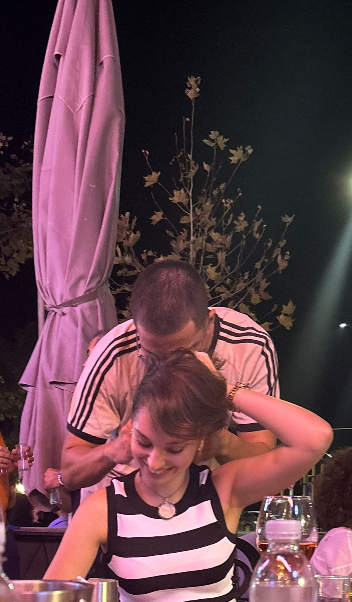

Merhaba prenses, seni uzun zamandır prenses olarak hayal ettiğim için gerçekten sana yazıyor olmak biraz korkutucu. İçimden senin için böyle bir şey hazırlamak geldi, hoşuna gider diye ümit ediyorum.
Umarım hayatında her şey düzene girmiştir. Benim girdi, bir sorunum yok şükür. Sadece birazcık seni özledim. Öncelikle sana teşekkür etmek istiyorum. Bu kadar iyi bir insan olduğun için, her zaman nazik ve anlayışlıydın ve bir kere bile kalbimi kırmadın. Teşekkür etmemin asıl sebebiyse bana hayattaki amaçlarımı hatırlatmış olman. Zamanı geldiğinde buralardan gideceğim fakat bunu sana ulaşmak için değil kendim için yapacağım. O gün geldiğinde sana da ulaşırsam tadından yenmez tabii :)
Zor zamanlarımda yanımda oluşunu asla unutmayacağım, romantik anlamları bir kenara bırakmak gerekirse seni bir birey olarak gerçekten çok seviyorum. Hiçbirimizin hayatı kolay değil ve ileride zorluklar yaşayacağız. O günler geldiğinde kendinden asla şüphe etme çünkü kelimenin tam anlamıyla sen dünyadaki en harika insansın. Senin yanımda olduğun gibi her zaman ben de senin yanında olacağım. Belki yakın zamanda prensin olamayacağım fakat her zaman şövalyen olarak kalacağım.
MİNİK BİR ŞARKI 